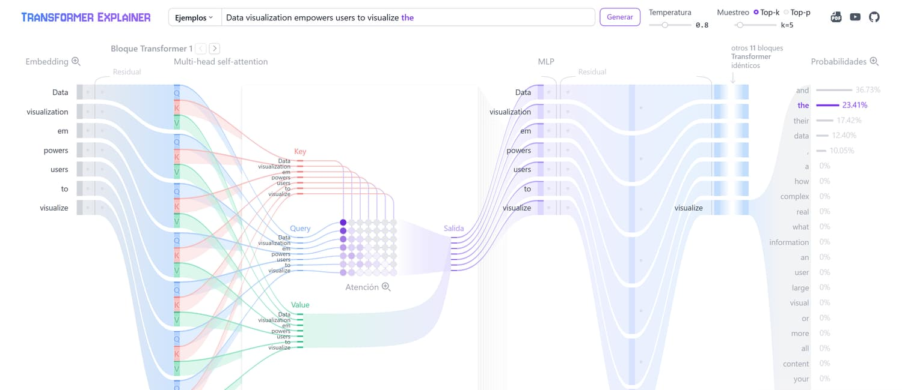
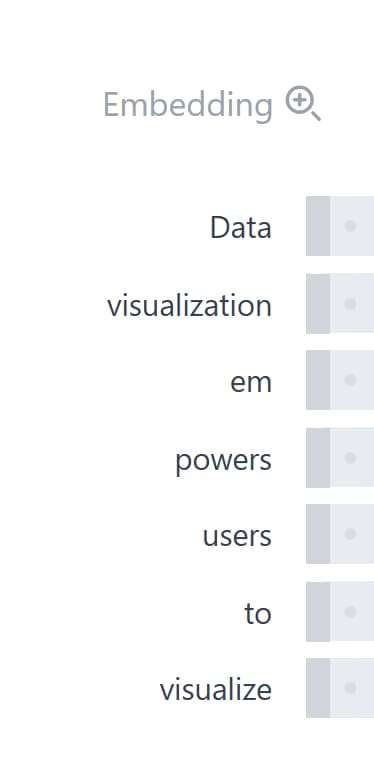
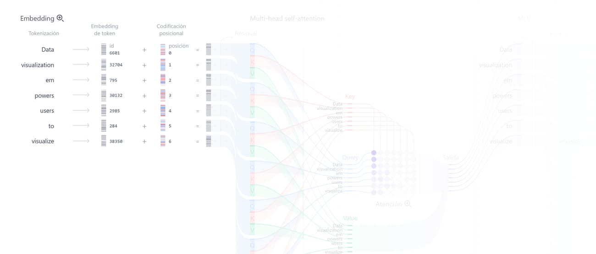
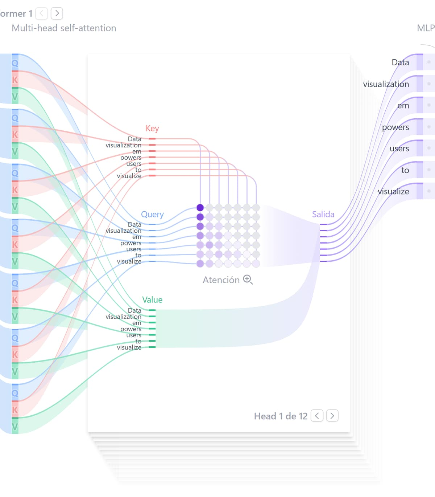
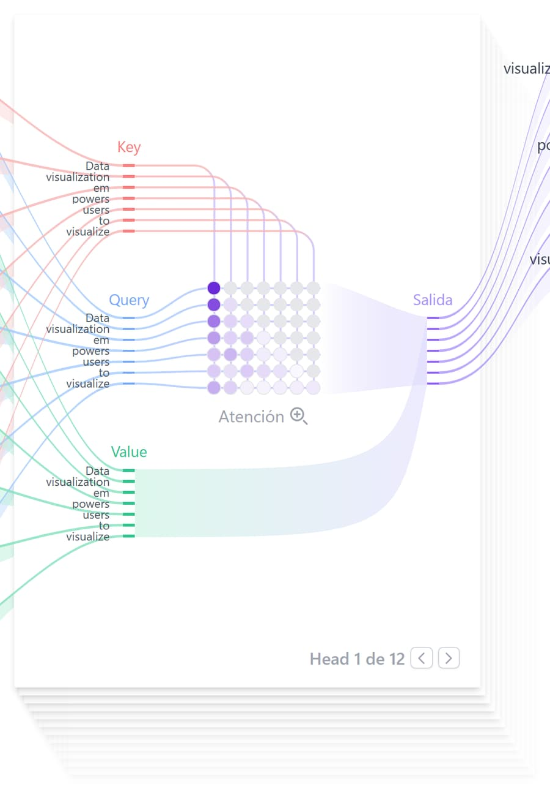
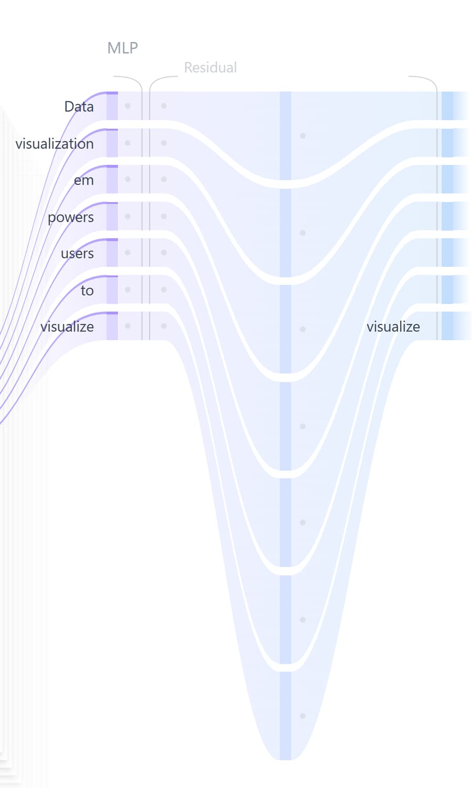
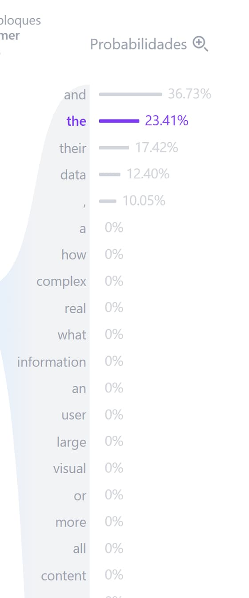

Qué es cada cosa de las que se ven en la herramienta, etapa por etapa. Conviene leerla con la visualización abierta al lado: cada sección dice qué mirar y dónde.
Etapa 0
La pantalla se lee de izquierda a derecha y es una sola cosa: el camino que hace un texto hasta convertirse en una predicción. Entra una frase por arriba y sale, a la derecha, una lista de palabras candidatas con su probabilidad.

Lo que está entre Multi-head self-attention y MLP es un bloque Transformer. Después viene el cartel «otros 11 bloques Transformer idénticos»: eso es literal — la misma estructura, repetida doce veces, cada una con sus propios pesos.
Qué mirar
Etapa 1
El modelo no ve letras ni palabras: ve números. Esta primera columna hace la conversión en dos pasos.
Primero la tokenización parte el texto en piezas. No coinciden con
las palabras: en la captura, empowers se parte en em +
powers. Cada pieza tiene un número de identificación dentro de un
vocabulario de 50.257 entradas.

Después, el embedding de token cambia cada ID por un vector de 768 números, buscándolo en una tabla que se aprendió durante el entrenamiento. Y como ese vector es el mismo sin importar dónde aparezca la palabra, se le suma un embedding posicional: otro vector de 768 números que depende únicamente de la posición.

Qué mirar
em y la de powers son independientes.
Nada las junta todavía: eso pasa recién en la atención.
Para comprobar
Etapa 2
Acá es donde los tokens por fin se miran entre sí. Es la única parte del modelo donde la información pasa de una fila a otra.
Cada vector se transforma en tres vectores nuevos, multiplicándolo por tres matrices de pesos distintas:
La metáfora que ayuda: cada token levanta la mano con un cartel (Key) y a la vez busca carteles (Query). Donde una búsqueda coincide con un cartel, se copia lo que ese token tenía para aportar (Value).

La pila de hojas de atrás no es decorativa: son las 12 heads. Cada una hace todo esto por separado, con sus propios pesos, mirando cosas distintas — una puede seguir concordancias de género, otra referencias lejanas. Abajo dice «Head 1 de 12» y se puede pasar de una a otra con las flechas.
Qué mirar
Etapa 2 · detalle
La cuadrícula del medio es la matriz de atención: una fila por token que mira, una columna por token mirado. Cuanto más oscuro el punto, más peso le da esa fila a esa columna.

Se arma en tres pasos. Producto punto: se multiplica cada Query por cada Key número a número y se suma, dando un puntaje de afinidad. Máscara: se tapan los tokens que vienen después, porque el modelo predice hacia adelante y no puede espiar el futuro. Softmax: los puntajes se convierten en proporciones que suman 1 en cada fila.
Qué mirar
Para comprobar
Etapa 3
Después de la atención, cada token pasa por un perceptrón multicapa — y acá vuelven a estar solos: el MLP procesa cada fila por separado, sin mirar a las demás.

Son dos capas lineales con una activación no lineal en el medio. La primera expande el vector de 768 a 3072 números — cuatro veces más espacio. Ahí se aplica GELU, que deja pasar entero lo que es grande y solo parcialmente lo chico. La segunda capa comprime de vuelta a 768.
Sin esa no linealidad, apilar doce bloques no serviría de nada: la composición de transformaciones lineales es otra transformación lineal, y el modelo entero colapsaría a una sola matriz.
Las líneas grises que rodean la atención y el MLP son las conexiones residuales: a la salida de cada bloque se le suma su propia entrada. Así, cada bloque no tiene que reconstruir toda la información, solo agregar lo que aporta. Y la normalización por capa reescala los valores antes de cada etapa, para que no se disparen al atravesar doce bloques.
Qué mirar
Etapa 4
Después de los doce bloques, se toma solo el último token — que para entonces acumuló contexto de todos los anteriores — y se lo multiplica por una matriz final. Salen 50.257 números, uno por cada token del vocabulario: los logits.

Los logits son puntajes crudos: pueden ser negativos y no suman nada en particular. El softmax los convierte en probabilidades entre 0 y 1 que suman 1. Recién ahí se puede decir «este token tiene 23% de chances».
Los dos controles de arriba a la derecha deciden cómo se elige entre esos candidatos. Ninguno cambia el modelo.
Qué mirar
Para comprobar
Referencia
El modelo que corre en la herramienta es el más chico de la familia GPT-2. Los modelos actuales tienen la misma estructura, con estos números mucho más grandes.
| Vocabulario | 50.257 tokens |
| Dimensión del embedding | 768 |
| Bloques Transformer | 12 |
| Heads por bloque | 12 |
| Dimensión por head | 64 (768 ÷ 12) |
| Capa oculta del MLP | 3072 (768 × 4) |
| Contexto máximo | 1024 tokens |
| Parámetros | ~124 millones |
Referencia
Estos términos quedaron en inglés a propósito, porque así van a aparecer en cualquier bibliografía que consulten.
| Término | Qué es |
|---|---|
| token | La unidad mínima que procesa el modelo. Puede ser una palabra, un pedazo de palabra o un signo. |
| embedding | El vector de números que representa a un token. También, el proceso de obtenerlo. |
| self-attention | El mecanismo por el que cada token pondera a los demás. «Self» porque la secuencia se mira a sí misma. |
| head | Una de las 12 atenciones paralelas dentro de un bloque, cada una con sus propios pesos. |
| Query / Key / Value | Las tres proyecciones de cada token: qué busca, qué ofrece, qué aporta. |
| logit | Puntaje crudo, previo al softmax. Puede ser negativo. |
| softmax | La función que convierte un vector de puntajes en probabilidades que suman 1. |
| GELU | La activación no lineal del MLP en GPT-2. |
| dropout | Apagar neuronas al azar durante el entrenamiento, para evitar sobreajuste. En inferencia no actúa. |
| top-k / top-p | Dos formas de recortar la lista de candidatos antes de elegir uno. |